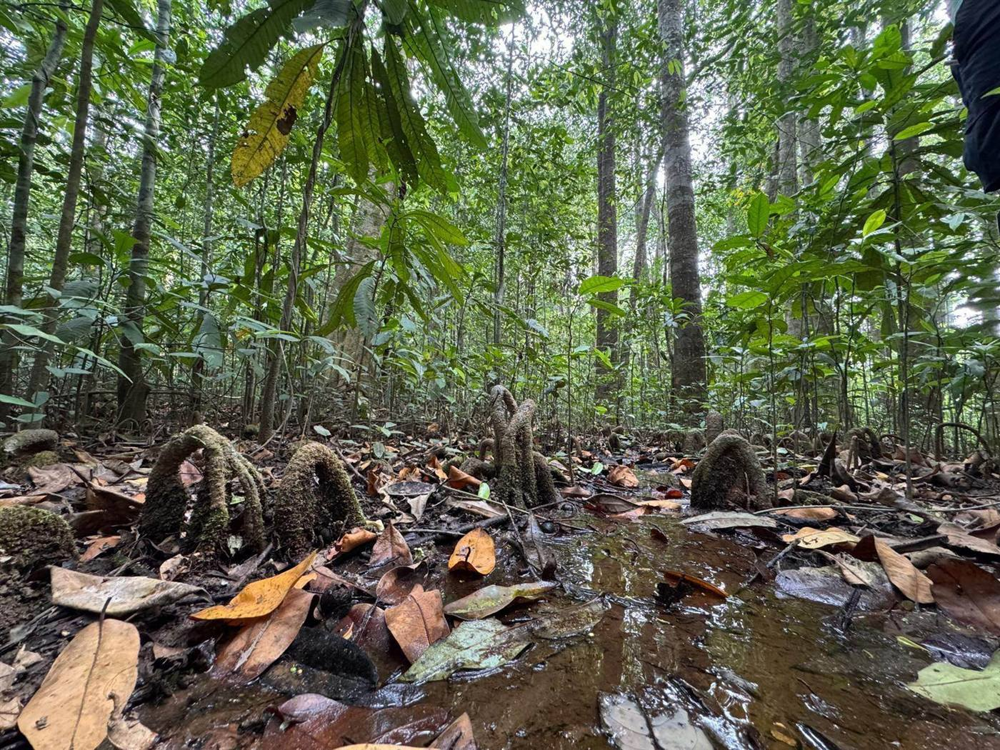
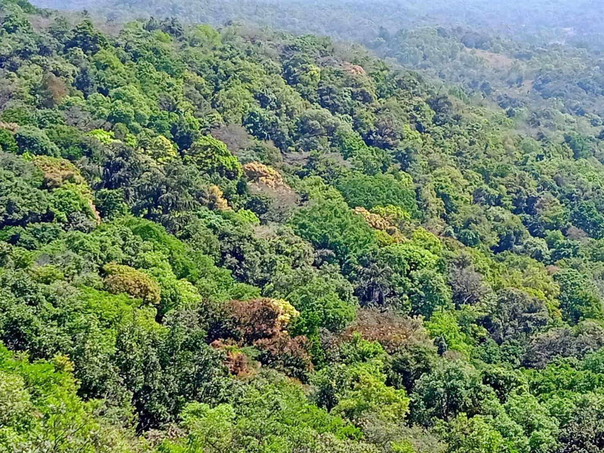
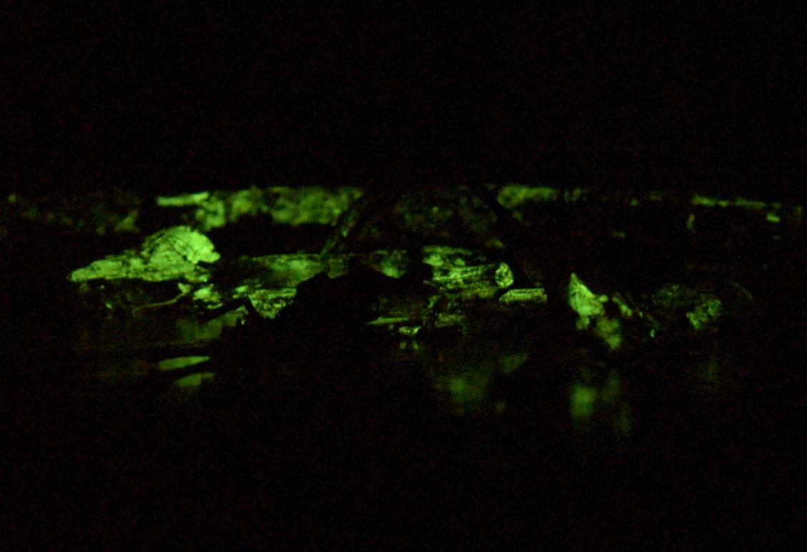
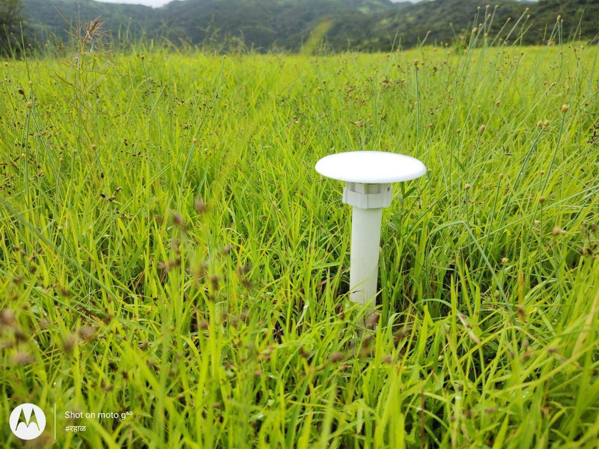

We study the influence of microclimate on diversity across the length of Western Ghats in India.
A network of under-canopy climate probes, from the Myristica swamps of Uttara Kannada to the forests of northern Maharashtra, recording the climate that plants and animals actually experience.
Measuring climate where life actually happens
The Microclimate India Research (MIR) project is at the forefront of microclimate research in the Western Ghats, a global biodiversity hotspot. This is the first initiative in India to study the association of microclimate with ecological processes. MIR project aims at developing a network of microclimate recording stations, collate microclimate data and studying ecological associations. The project also aims to share, collaborate and provide data for research.
In the current changing climate scenario it is important to understand the impact of climate change on ecosystems. Though there are many impact studies most studies rely on macro-climate data. Contrarily most of the diversity resides within the under-canopy and is influenced by microclimate factors, such as soil temperature, shade, air temperature close to the earth, soil moisture conditions and so on. Our research spans across the length of the Western Ghats recording the microclimate features at a fine resolution and quantifying various ecological aspects and their relation to microclimates in the forested region.
Meet the team
Why the climate a few centimetres above the ground matters
Weather stations measure air in open ground, about two metres up. Seedlings, insects, amphibians and fungi live in the shade of the canopy, in the leaf litter and in the soil. There, conditions can differ from the regional average by several degrees.
Most diversity lives under the canopy
Forest-floor species respond to the shade, soil moisture and near-ground temperature around them, not to the regional average. Climate models that ignore this can misjudge where species can survive.
Forests buffer extremes
Dense canopies, valleys and swamps can stay cooler and wetter than open ground during heatwaves. These microhabitats may act as refuges as the climate warms. We are measuring how strong that buffering is.
Open data for better decisions
Long-term, fine-resolution records support conservation planning, ecological restoration and climate-impact studies. We are building an open data portal so other researchers can use them too.
Our research projects
Explore our current research projects and initiatives focused on understanding the microclimate patterns and their influence on the Western Ghats' flora and fauna. Join us in our mission to uncover the secrets of microclimate and its implications for the environment and wildlife.

Microclimate in Western Ghats Forests
How sensitive are tropical tree species to the very different microclimates across the vegetation clusters of the Central and Northern Western Ghats?
Read more →
Myristica swamps
Characterising moisture, temperature and diversity in one of India's rarest and oldest freshwater swamp forests, and in the habitats around them.
Read more →
Bioluminescent forest floor
What microclimate do the glowing fungi of the monsoon forest floor need, and how will a changing monsoon affect them?
Read more →
A growing network of microclimate stations
Our network has 34 TMS-4 data loggers at 13 study sites. They run from Sakleshpur in Karnataka, through Uttara Kannada and Chorla Ghat on the Goa border, to Satara, Ratnagiri and Pune in Maharashtra. Each one records soil, surface and air temperature and soil moisture every 15 minutes, and can run for about ten years. They sit in swamps, evergreen forest, forest edges, hilltops and open grasslands.
Use the interactive map to see where each probe is, what habitat it monitors and what data is available.
Latest updates
Moisture and Diversity of forest and Swamps: Initiated a monitoring project in the myristica swamps near forests of Sirsi and Shimoga regions.
Latest findings from MIR project will be shared at the upcoming ERA (Ecological Restoration Alliance Conference in November 2024).
Shared latest data from undercanopy microclimate probes in conference at Helsinki.


Help us put a probe in every forest that needs one
MIR is a grassroots effort run by dedicated researchers, local communities and partner institutions. Every probe, field trip and dataset is funded by grants and supporters like you. Your contribution goes directly into instruments, field work, and keeping the data open.
Instruments
New TMS-4 loggers for under-sampled forests, swamps and grasslands.
Field work
Travel to remote sites to download data and survey vegetation.
Open data
Hosting, cleaning and publishing a public microclimate database.
Young researchers
Field stipends and training for students from the region.
Join the research effort
Become part of our community and contribute to our microclimate research endeavors. Whether you are a scientist, conservationist, or nature enthusiast, there are various ways to get involved and support our mission. Join us in safeguarding the microclimates of the Western Ghats.
Collaborating institutions
- Kuvempu University
- Stockholm University, Sweden
- The Green Concept, Pune
- Agharkar Research Institute, Pune
- National Centre for Biological Sciences
- Mhadei Research Centre
- Uppsala University, Sweden